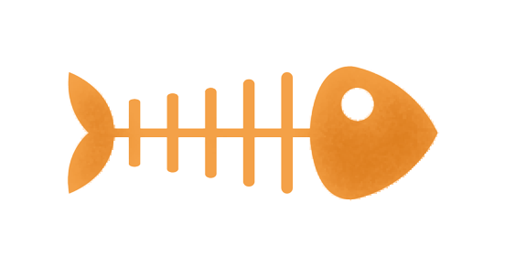

My Role
I took primary responsibility for the visual design and style guide.
Each member of the team contributed to all steps of the redesign process. My notable contributions are listed below.
Research
Conducted user interviews to identify pain points. Completed usability heuristics analysis of existing site.
Empathize
Conducted user surveys and used data to create User Persona. Created 'I like, I Wish, What If' analysis.
Definition
Contributed to developing the problem statement we used to focus our efforts.
Prototype
Worked in Figma to create wireframes. Created hero carousel slideshow. Created navigation menu overlays.
Test
Tested lo-fi wireframes with multiple users to gain insight on improvements needed.
Iterate
Used feedback to inform hi-fi prototype application process. Refined visual design to complete and apply the UI Style Guide based on team and user feedback.


Research
As a group, we created an executed our research plan. We used various methodologies: five user interviews to collect qualitative data from participants, a quantitative survey sent via social media receiving 40 results, competitve analysis, and a heuristics evaluation on usability principles.
We found that the existing site had many usability issues that drove users away.
“The hardest part about adopting was feeling anxious about making the right decision with limited information about the animal.”

Problem Statement
We determined that the current site is not providing a user-friendly navigation system, which is causing users to seek other rescue nonprofit organizations to support since information is difficult to find.
We believe that with our redesign users will be able to navigate the site to effectively find information about adopting cats from RescueCats.org.

Wireframes & Iterations
After determining the necessary features to achieve our goal, we created sketches to explore ideas for layout and navigation.
We created a lo-fi prototype and conducted user testing. We were able to adjust our navigation menu to meet user needs, provide the user with page and progress indicators, and added instructions for filtering available cats.


UI Style Guide
With team feedback, I created a style guide.
- We wanted to give our users easily identifiable UI elements to make it easy to navigate.
- Flat colors and material design inform the user in a fun and playful way.
- Using iconography throughout and a cartoon-look on our interactions help make for a delightful user experience.
- An inviting style that makes users comfortable finding their new family member was our goal.
High-Fidelity Prototypes
We applied the style to create hi-fi Figma clickable prototypes and tested them with more users.
Mobile Prototype
Our goal was to create a responsive website, so we created a mobile prototype as well.


{kind=link}
{kind=link}
Conclusion
Our responsive redesign was successful in improving ease-of-use and customer confidence. Planning and executing our research allowed us to focus our efforts on what was most important and even what our end goal should be. User testing was critical for making iterations to our designs throughout the process. We were also able to create interactions that provided the user with a delightful experience.
Frequently Asked Questions
-
Why was this case study created?
This group project was created to demonstrate responsive web design for a Georgia Tech UI/UX Bootcamp in 2022.
-
How many members were on the team?
Five team members.
-
How long did this project take?
We completed this project over a three week period.
-
What did you learn about UX/UI Design from this project?
Working as a team to utilize each individuals strengths. Focusing on the user needs using feedback throughout. Limiting scope to complete the project on time.